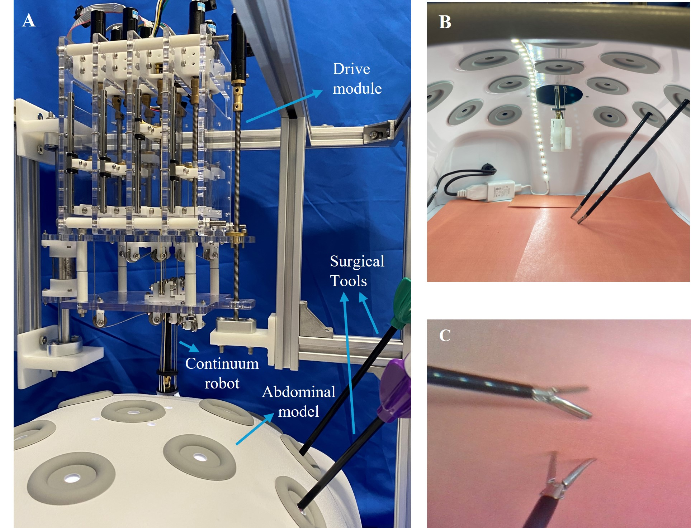
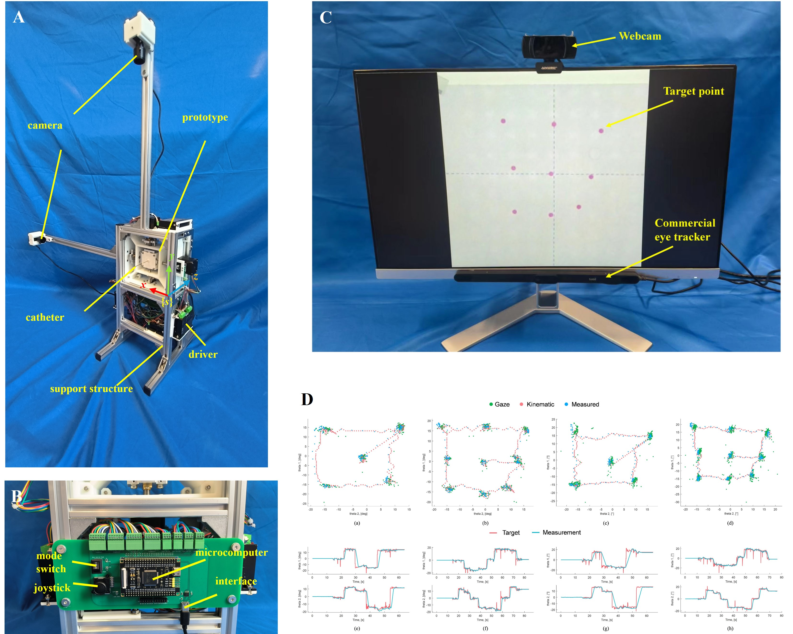
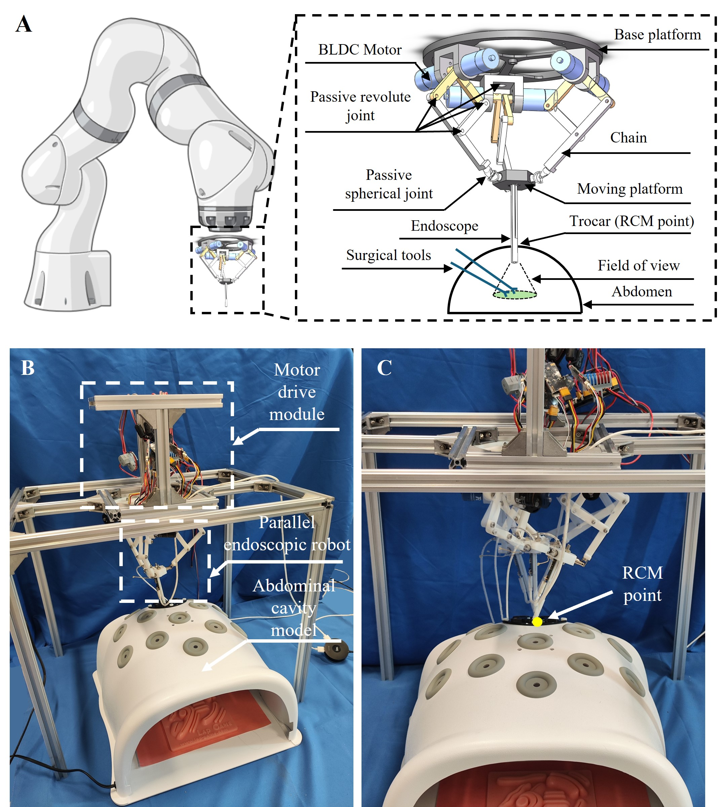
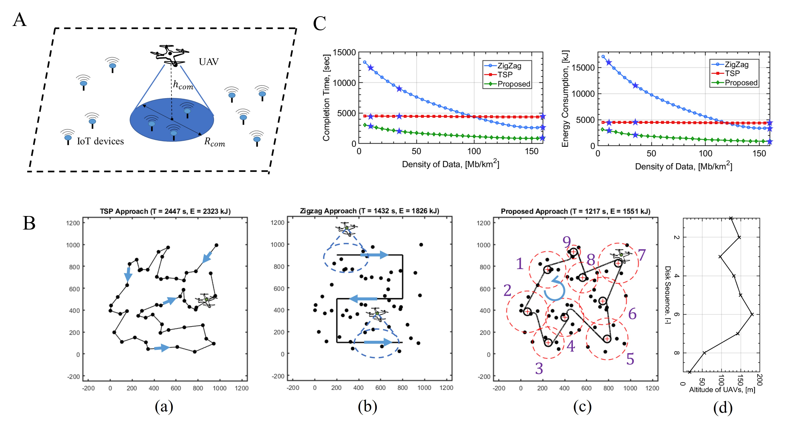
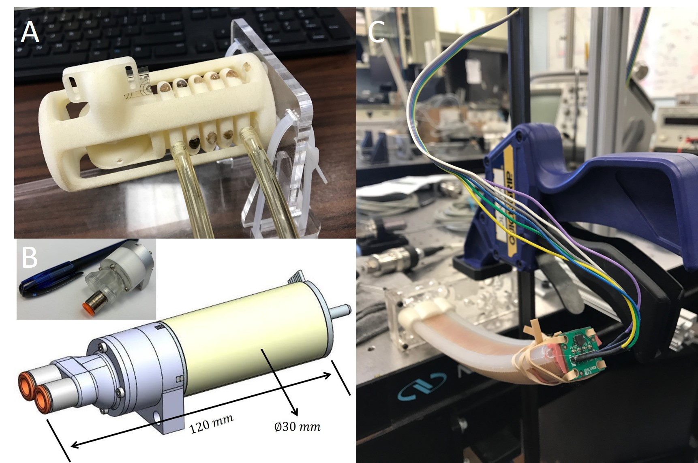
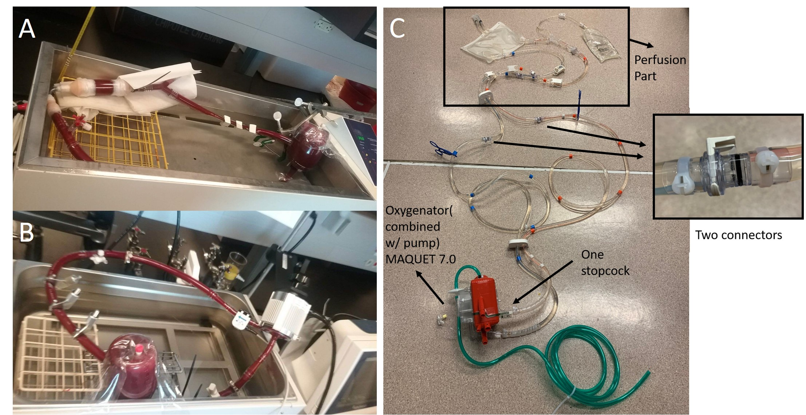
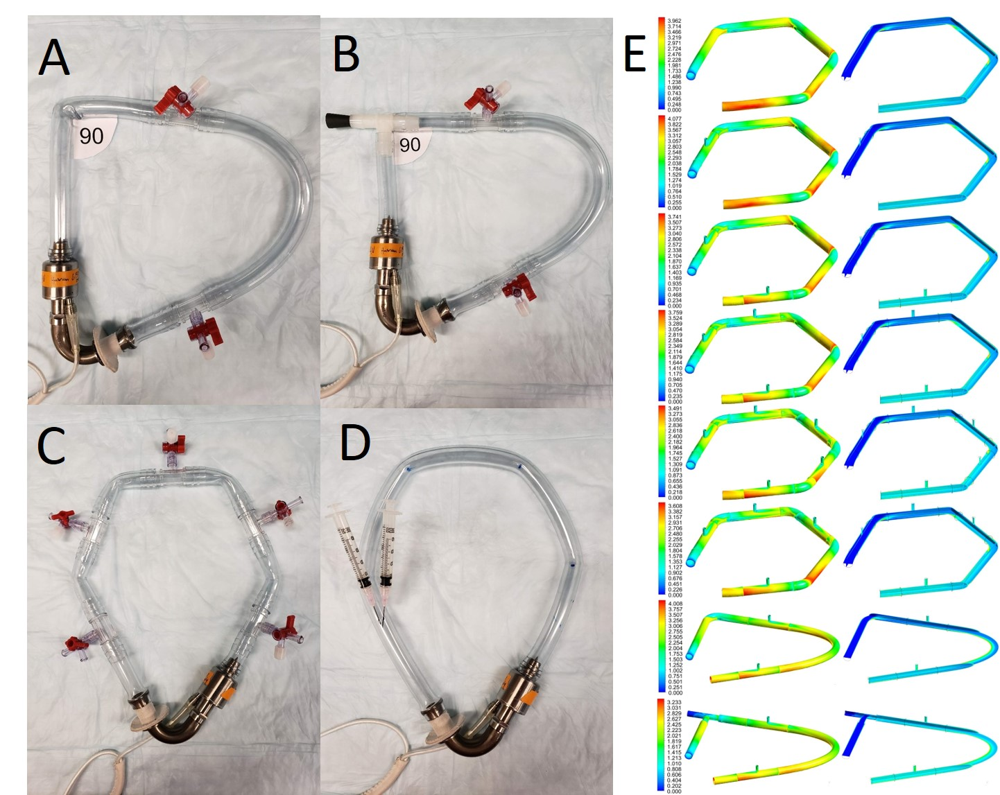
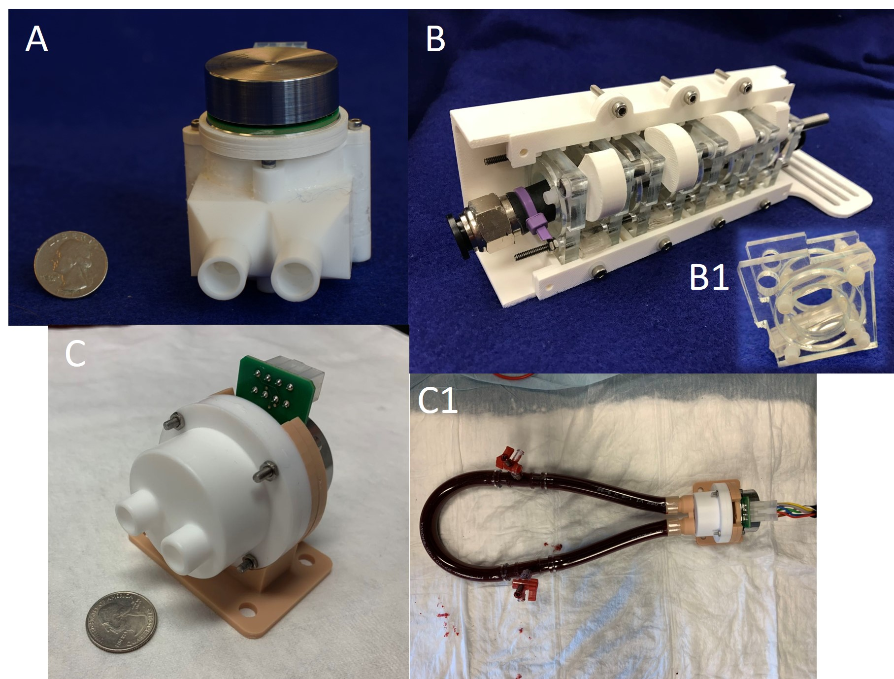
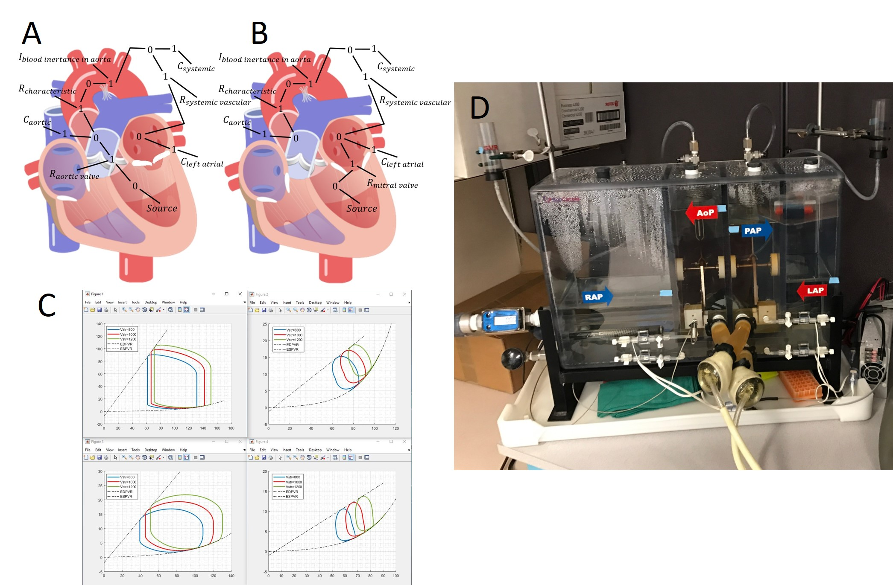
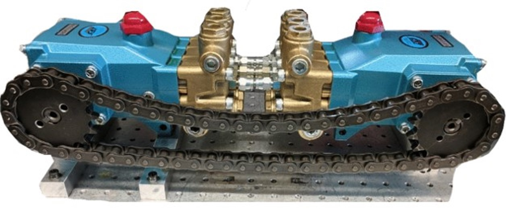

Description: (a) A 6-DOF continuum laparoscope is designed, featuring RCM constraint-free, optical angle rotation and zoom capabilities, thereby reducing the difficulty of FOV adjustment from a mechanical design perspective (MMT 2024, IROS 2024, etc).
(b) GazeScope, a novel framework for automatic laparoscopic FoV adjustment, which considers gaze attention, the positions of surgical tools in the image, and the eye-hand consistency, is proposed to effectively and efficiently adjust the laparoscopic field-of-view (RAL 2025, Measurement 2025, etc).
(c) A teleoperation system is proposed that utilizes a single RGB camera and incorporates a motion mapping method addressing both end-effector tracking accuracy and optimal joint configuration imitation for the follower robotic arm/continuous robot (IROS 2025, etc). .
(d) A model-free controller for versatile continuum laparoscopic robots, which can directly map image features to joint-space commands, is currently in development (WIP).
(e) A magnetic sensor array-based method for estimating continuum robot configurations is currently in development as well (WIP).
Project Group: Pan, Z. (class 22), Wang, B. (class 23), Xiang, J. (class 23), Zhang, J. (class 24).
Sun Yat-Sen University

Description: (a) A novel high-performance continuous MRI-compatible pneumatic motor is proposed, along with quick-connect revolute/prismatic motion output modules and high accurate bidirectional encoder modules. (Measurement 2024, FRSE 2024, GFPS 2022, etc).
(b) A comprehensive modeling and control framework for the proposed continuous MRI-compatible pneumatic motor is developed, enabling position, speed, and torque control while considering long air tube effects, and providing a fully functional servo motor solution (TMECH 2025 , etc).
(c) Cable-driven continuum robots actuated by the proposed pneumatic motors are currently in development, as well as hybrid force-position controller (WIP).
Project Group: Pan, Z. (class 22), Ye, Y. (class 24).
Sun Yat-Sen University

Description: (a) A novel unified method employing cascade regression is developed to concurrently address eye detection, state classification, and gaze estimation tasks (ICASSP 2024, ACM MM 2023, ICPR 2022, etc).
(b) To improve the current robot-assisted biopsy system, a compact four degree of freedom (DoF) needle deployment robot is designed, and a deep learning-based eye gaze control method, using only one camera, is derived to facilitate the interaction efficiency and efficacy (TIM 2024, FRSE 2023, etc).
(c) GazeScope, a novel framework for automatic laparoscopic FoV adjustment, which considers gaze attention, the positions of surgical tools in the image, and the eye-hand consistency, is proposed to effectively and efficiently adjust the laparoscopic field-of-view (RAL 2025, etc).
(d) Other applications have also been applied (IJAE 2022, etc).
Project Group: Qiu, Q. (class 20), Jia, G. (class 20), Zhu, J. (class 21), Pan, Z. (class 22), Zhang, J. (class 24).
Sun Yat-Sen University

Description: (a) A 6-DoF 3-RRRS (Revolute-Revolute-Revolute-Spherical) parallel robot is designed, with derived analytical solutions to its nonlinear kinematic problems - including forward kinematics, inverse kinematics, and differential kinematics - enabling fast and accurate feedback control calculations (Mathematics 2024, FRSE 2023).
(b) This architecture is later used as a robotic endoscope, offering enhanced DOFs and simplified RCM constraint compliance. A multi-tool tracking control method is also developed, integrating the positions and sizes of multiple STTs with EHC error compensation for automated FOV adjustment. (TMRB 2025, etc).
(c) A Partition-Learning-Selection-Augmentation (PLSA) framework is designed to predict the correct and unique solution from multiple solutions for the FK of parallel robots (IROS 2025, etc).
Project Group: Wang, J. (class 22), Xiang, R. (class 23), Ye. Y. (class 24).
Sun Yat-Sen University

Description: Quadrotor unmanned aerial vehicles (UAVs) have emerged as ubiquitous and agile robots and data carriers within the framework of the future Internet of
Things (IoT) and mobile wireless networks. Yet, the insufficient onboard battery necessitates the optimization of energy consumption for both the UAV and IoT devices
while ensuring that communication requirements are met. Fig.A: one-to-mult UAV assisted IoT networks. Fig.B: Simulation comparison of UAV trajectories
with different design approaches. Fig.C: Comparison with respect to energy consumption and completion time (Mathematics 2023, Sensors 2022, CAC 2021, etc).
Project Group: Jia, G. (class 20).
Sun Yat-Sen University

Description: Soft robotics, contrast to conventional rigid-body robots made with high stiffness materials, utilizes compliance and adaptability of soft materials to
interact with human and environment safely. Fluid power, both pneumatics and hydraulics, compared to other conventional actuation methods such as tendon or
shape memory alloy, has higher power density, higher efficiency, and higher bandwidth. Fig.A: A elbow-structured pneumatic actuator which can achieve linear motion.
Fig.B: A miniature hydraulic power unit which can power soft robotics with high bandwidth and high energy efficiency. Fig.C: A soft bending robotic ringer.
My Ph.D. project.
Vanderbilt University

Description: Ventricular Assist Device (VAD) and Extracorporeal membrane oxygenation (ECMO) system are two effective approaches to save heart failure patients. However,
critical components such as the pump damages the blood. Specifically, hemolysis, platelet activation, microparticle generation and von Willebrand factor (vWF) degradation.
Fig.A: an in-vitro circulation loop with porcine blood to test Impella 5.5. Fig.B: an in-vitro circulation loop with porcine blood to test Centrimag.
Fig.C: Components of a typical ECMO system. (ASAIO 2020, etc)
My Ph.D. project.
Vanderbilt University
University of Arizona

Description: Demonstration of MCS device hemocompatibility is required for regulatory approval and subsequent human clinical use. While testing the MCS device itself,
the additional loop components, such as connectors and loop geometry, would also lead to shear mediated blood damage. Fig. A: an in-vitro circulation loop with 90
deg angulation via heat-bending. Fig.B: an in-vitro circulation loop with 90 deg angulation via a T-connector. Fig.C: an in-vitro circulation loop with 5
luer connectors. Fig.D: an in-vitro circulation loop with 0 luer connectors. Fig.E: CFD simulations for shear mediated platelet activation index. (AO 2019, etc)
My Ph.D. project.
Vanderbilt University
University of Arizona
Stony Brook University

Description: While mechanical circulatory support (MCS) devices, i.e. ventricular assist devices (VADs) and total artificial hearts (TAHs), are vital in restoring
hemodynamics in patients with advanced heart failure, serving as either bridge to transplant or destination therapy, a significant number of adverse events have emerged
for device implanted patients. Many of the observed complications are due to chronic exposure to non-pulsatile flow and the high shear stress created by the current
method of blood propulsion or usage of prosthetic valves. Fig.A: A valveless pulsatile flow MCS design. Fig.B: A linear peristaltic MCS design.
Fig.C: A valveless compact MCS design. (iMech Part C 2023, Trans ASME-MD 2021, etc)
My Ph.D. project.
Vanderbilt University
University of Arizona

Description: Though mechanical circulatory support (MCS) devices, such as ventricular assist devices and total artificial hearts (TAH), provide heart failure patients
with bridges to heart transplantation or are alternatives to transplantation, device performance, and corresponding control strategies are often difficult to evaluate.
Therefore, proper models are needed to size the MCS device, to control the MCS device, and to modify the MCS device. Fig.A&B: A bond graph model of cardiovascular
system. Fig.C: PV loops of left and right atriums and ventricles. Fig.D: An in-vitro mock circulation device (AO 2019, etc).
My Ph.D. project.
Vanderbilt University
University of Arizona

Description: High power density, good controllability, and low cost are the most appealing characteristics that make hydraulic systems the best choice for many
applications. Current state-of-the-art hydraulic variable displacement pumps still suffers from low efficiency at low displacement. Therefore, novel variable
displacement hydraulic pump which has relative-high efficiency across a wide range of operation conditions is needed. Fig: A first generation prototype of
variable displacement alternating flow hydraulic pump (TMECH 2019, FPMC 2018/2017, DSCC 2017, etc).
My Ph.D. project.
Vanderbilt University
University of Minnesota